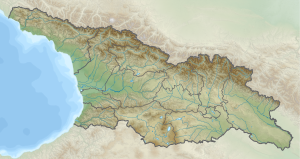
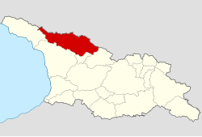

სვანეთი
გეოგრაფია

მდებარეობს დასავლეთ საქართველოს ჩრდილოეთ ნაწილში, კავკასიონის ქედის სამხრეთ კალთებზე. აღმოსავლეთით რაჭა ესაზღვრება, სამხრეთით — ლეჩხუმი და სამეგრელო, დასავლეთით — აფხაზეთი, ჩრდილოეთით — ყარაჩაი-ჩერქეზეთი და ყაბარდო-ბალყარეთი. 3000–5000 მეტრი სიმაღლის კავკასიონის მთებით შემოსაზღვრული სვანეთი კავკასიაში ყველაზე მაღალ დასახლებულ რეგიონად ითვლება. კავკასიის 10 უმაღლესი მწვერვალი სვანეთში მდებარეობს. მათ შორისაა საქართველოს უმაღლესი მწვერვალი შხარა (5201 მ), თეთნულდი (4974 მ), შოთა რუსთაველი (4960 მ), უშბა (4710 მ), აილამა (4525 მ), ლალვერი, ლაცგა და სხვა. იყოფა ზემო (მდინარე ენგურის ზემოწელი) და ქვემო სვანეთად (ცხენისწყლის ზემოწელი). მათ ჰყოფს მაღალი სვანეთის ქედი ლატპარის ზეკარით (უღელტეხილით). ზემო სვანეთს შეადგენს მდინარე ენგურის ხეობა, ენგურის სათავიდან სამეგრელოს საზღვრამდე. ზემო სვანეთი ბალის ქედით იყოფოდა ორ ნაწილად. ბალს ქვემო სვანეთი დადეშქელიანების სამფლობელი იყო, ბალს ზემო სვანეთი კი თავისუფალ სვანეთად იწოდებოდა. სულ ზემო სვანეთში 13 თემი იყო:
- სადადეშქელიანო: ეცერი, ფარი, ლახამულა, ცხუმარი;
- თავისუფალი სვანეთი: ლატალი, ლენჯერი, მესტია, მულახი, წვირმი, იფარი, კალა, უშგულის თემი;
ქვემო სვანეთს შეადგენს ცხენისწყლის ხეობა სათავიდან მურის ხიდამდე (ქ. ცაგერის) სიახლოვეს. ქვემო სვანეთი ლეჩხუმითურთ XIX საუკუნის დასაწყისიდან შედიოდა სამეგრელოს დადიანების მფლობელობაში, ამიტომ ის სადადიანო სვანეთადაც არის ცნობილი. ცნობები ქვემო სვანეთის ანუ სადადიანო სვანეთის ძეგლების შესახებ იხ. ბროსსე, და გრაფიანია უვაროვისა: მატერიალი პო არხეოლოგიი კავკაზა, ტ. X. ქვემოდ, სადაც ამ ავტორებს ვიხსენებთ, ეს მათი წიგნები იგულისხმება. 1910 წელს ე. თაყაიშვილის სვანეთში ექსპედიციის დროს, ქვემო სვანეთი შეიცავდა სულ სამ თემს: ლენტეხისა, ჩოლურისა და ლაშხეთისა:
- ლენტეხის თემის სოფლები: ლენტეხი, ფაყი, ლექსურა, გულიდა;
- ჩოლოურის თემის სოფლები: საყდარი, ზემო ჭველიერი, მამი, თეკალი;
- ლაშხეთის თემის სოფლები: სასაში, ჟახუნდერი, ჩუკული, ჩიხარეში, მახაში, დაბიში, ახაშენი, მელე, ნაცული, ხერია, შგედი, მარგვიში, ღობი, ლამზაგორი.
ისტორიულ სვანეთში შედიოდა აგრეთვე კოდორის ხეობა, სადაც სვანები XIX საუკუნეში დასახლდნენ, თუმცა სვანები აქ ანტიკურ ხანაშიც ცხოვრობდნენ. ბერძნული წყაროები კოდორის ხეობაში მცხოვრებლებს მისიმიელების სახელით მოიხსენიებდნენ, რაც სვანური თვითდასახელება „მუშუანის“ თარგმანია.
თანამედროვე ადმინისტრაციულ-ტერიტორიული დაყოფით ზემო სვანეთი შედის სამეგრელო-ზემო სვანეთის მხარის მესტიის მუნიციპალიტეტში, ქვემო სვანეთი — რაჭა-ლეჩხუმის და ქვემო სვანეთის მხარის ლენტეხის მუნიციპალიტეტში, კოდორის ხეობა — აჟარის მუნიციპალიტეტში. სვანეთის მოსახლეობის აბსოლუტური უმრავლესობა ქართველია, კერძოდ მათი ეთნოგრაფიული ჯგუფი — სვანები.
